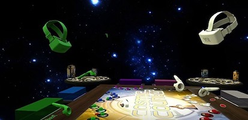
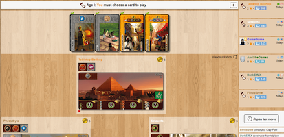
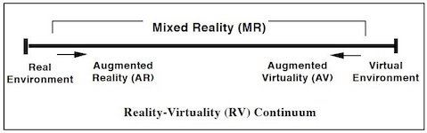
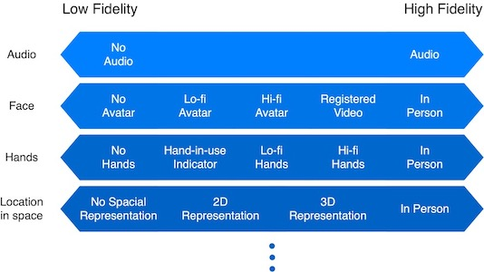

I researched ways in which Augmented Reality (AR) can be used as a social tool to provide a feeling of co-presence under the supervision of Prof. Brian A. Smith. Specifically, I helped investigate the ways to incorporate AR with board and card games to provide an individual the feeling of being in person and playing together when remote.
Research Project in the Computer-Enabled Abilities Laboratory (CEAL)
As a new project in CEAL, my principle responsibility was to investigate the problem space.
I reviewed current solutions to virtual board and card games such as Tabletop Simulator and Board Game Arena.

Image from Rock Paper Shotgun

Image from Tabletop Bellhop
All research questions revolve around the main theme of what level of presence is needed to give players an experience that is as rich as if they were in person? This question is closely related to the Reality-Virtuality (RV) Continuum proposed by Milgram et al. (1994).

Milgram et al. (1994)
Our problem is multi-dimensional as AR can affect the fidelity of all aspects of gameplay.

To start with one of the dimensions, we asked the research question to what extent is a physical representation of players necessary?
To test this research question, we created a study in which a group of participants play select board and card games with four levels of representation to identify their preferences: 1) In person, 2) Video upper body, 3) Video head, 4) Audio only. I aided in the creation of the experimental design, recruitment strategy, study materials, and institutional review board (IRB) protocol.